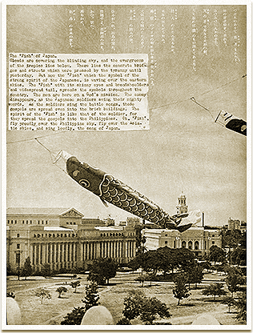

|
j
a v a s c r i p t |
May 5, 1943

Flying Carp
A double-header: "Constabulary Day" and "Children's Day." Tomorrow is "Thanksgiving Day" — all Manila will "express gratitude to Japan." The day after tomorrow we'll have a ceremony for the anniversary of the fall of Corregidor. Vargas declared half-holidays for May 6 and 7; made streetcars rides free, and requested that the flag be flown for three days — the Japanese Flag, that is. All this is to impress Tojo, who's in town for "frank talks with Vargas." La Vanguardia prints a picture of a Japanese paper carp traditionally hoisted on Children's Day. The caption hints at what Tojo's "frank talks" are about: "The Filipina mother explains to her children the courage of the carp, its stoicism and firmness confronting death, which should be emulated by the youths of Oriental Asia." At 2100 tonight, Maurice and René Klingler started the first patrol of our district. A crowd was around to cheer and kid them. I stepped out to see what the commotion was all about and was challenged by Maurice: "Halt! Who goes there? If you don't answer in 30 seconds, I'm going to run!" The crowd, already in stitches, roared with laughter. The whole night was one big joke. |
|
|
|
|